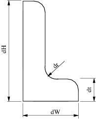
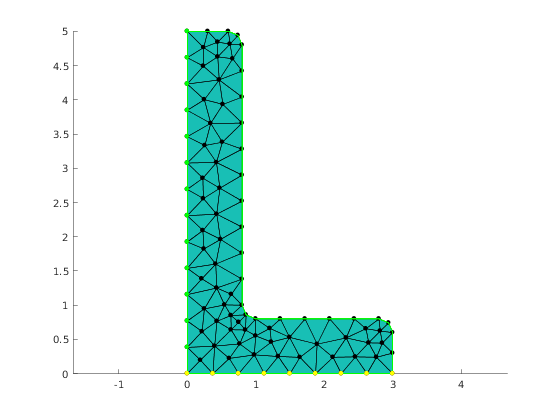

Contents
Illustrate tagging of region nodes
mesher = mp.Mesher();
Generate geometric model in GMSH geo format.
The model is parameterized by the following dimensions:

geom = mp.geoms.LShapeGeom('lshape');
Generate mesh and extract node coordinates and element-nodes adjacency
meshingParams.lc = 0.4; mesh = mesher.generate(geom, meshingParams);
Visualize mesh
viewer = mp.Viewer(); viewer.show(mesh);
Node selector
Here we prepares data structure that manages which nodes are tagged and with what value. The names of the structure fields corresponds to the names of regions in the mesh. The values are the node tags.
selector.left=2; selector.bottom=1
selector =
struct with fields:
left: 2
bottom: 1
Getting node tags
Here we are using the default tagging method which means that the tag '1' has the highest priority (for the case a node belongs to two or more regions)
nodeTags = mp_tag_region_nodes(mesh,selector,'default',0);
Plotting nodes
ptid = find(nodeTags==1); x = mesh.nodes(ptid, 1); y = mesh.nodes(ptid, 2); viewer.pointColor='yellow'; viewer.showPointsXY(x,y); ptid = find(nodeTags==2); x = mesh.nodes(ptid, 1); y = mesh.nodes(ptid, 2); viewer.pointColor='green'; viewer.showPointsXY(x,y);
Report demo status
mp_manage_demos('report', 'mp_tagging_nodes', true);